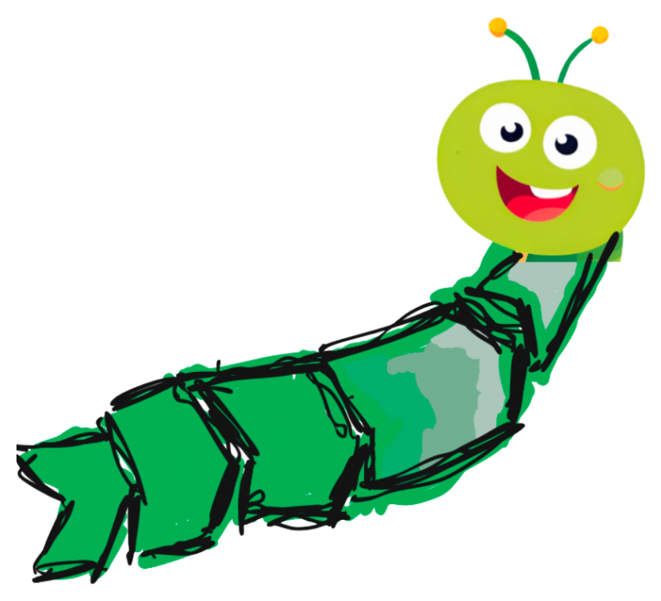
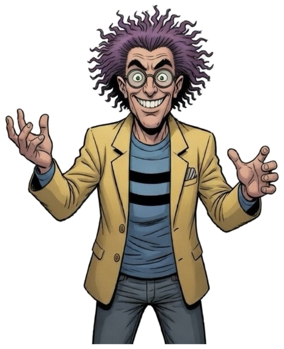

Hiermit bestätigt der Prozesswurm, dass
eine Stufe der Prozesswurm Lernwerkstatt erfolgreich abgeschlossen hat.


Teilnahmebestätigung der kostenlosen Prozesswurm Lernwerkstatt, keine geprüfte Qualifikation.
© Prozesswurm · prozesswurm.github.io